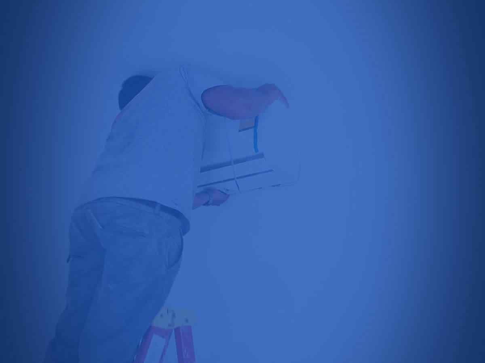

Réparation de climatisation et de chauffage
Votre système ne chauffe plus, ne climatise plus ou fait du bruit ? Nos techniciens certifiés trouvent la cause et réparent.
Une réparation claire, sans détour
Nous réparons les systèmes de climatisation et de chauffage résidentiels, muraux et centraux, partout dans le Grand Montréal. Nos techniciens diagnostiquent le problème rapidement et vous proposent la meilleure solution.
Une réparation d’urgence est disponible lorsque votre confort ne peut pas attendre.
Urgence et dépannage
Ce que nous réparons
Système mural
- Ne chauffe pas
- Ne climatise pas
- Fuite d’eau
- Bruits inhabituels
- Formation de glace
- Faible circulation d’air
- Télécommande défectueuse
Système central
- Ne démarre pas
- Température inégale
- Faible débit d’air
- Thermostat
- Réfrigérant
- Problèmes électriques
Comment se déroule une réparation
Votre appel
Vous décrivez les symptômes : chaleur, bruit, fuite, glace.
Diagnostic
Le technicien inspecte l’appareil pour identifier la cause.
Solution proposée
Nous vous présentons la meilleure option avant d’intervenir.
Réparation
La réparation est faite et le fonctionnement vérifié.
Questions fréquentes
Comment savoir si mon système a besoin d’une réparation ?
Il ne chauffe ou ne climatise plus, fait du bruit, démarre et s’arrête souvent, ou vos factures d’électricité augmentent.
Quelles marques réparez-vous ?
Gree, Tosot, Canair, Elios, Moovair, Zephyr, Haxxair, Carrier, Lennox, Goodman, York, Trane.
Offrez-vous un service d’urgence ?
Oui, une réparation d’urgence est disponible. Appelez-nous au 438-509-1823.
Réparez-vous les systèmes centraux ?
Oui, les systèmes centraux des maisons avec conduits, comme les modèles muraux.
Un travail propre, une équipe courtoise

Licence RBQ 5812-9388-01Entrepreneur certifié par la Régie du bâtiment du Québec
Techniciens certifiés
Installation et entretien par des professionnels licenciés.
Garantie fabricant et main-d’œuvre
Votre installation est protégée.
Service fiable et professionnel
Une équipe locale, de la soumission à l’entretien.
Aide pour la subvention LogisVert
Nous vous accompagnons dans les démarches.